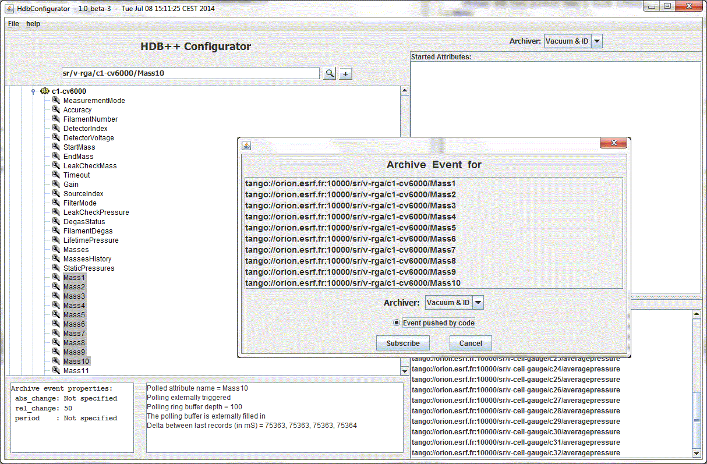
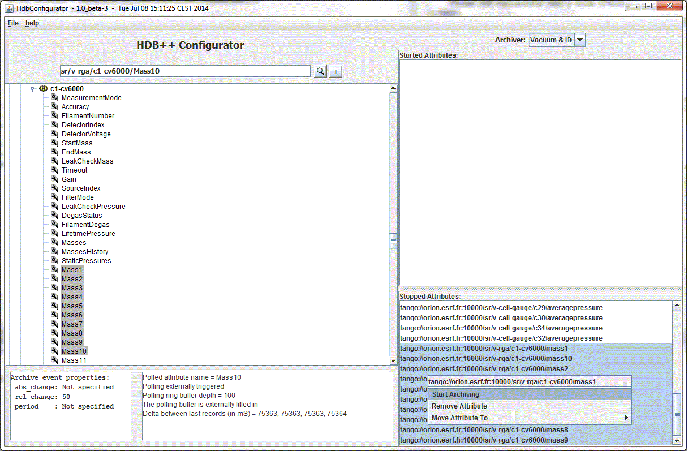

Multiple Attributes Selection
- You can select several attributes.
To add them, just click on + button.
You will not be able to set the archiving event properties (could be different for each attribute).
But you will be able to select the archiver and to set the Event push by code button if it the case.

- When the attribute has been added to and archiver, the archiving could be easily started.
